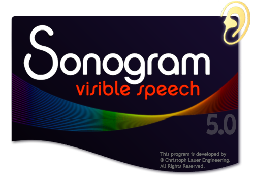
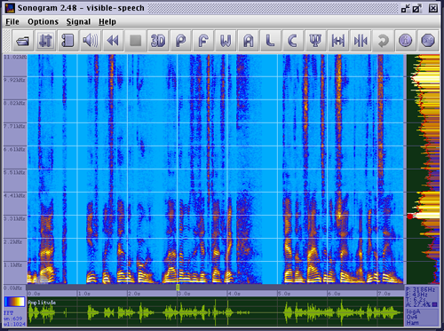
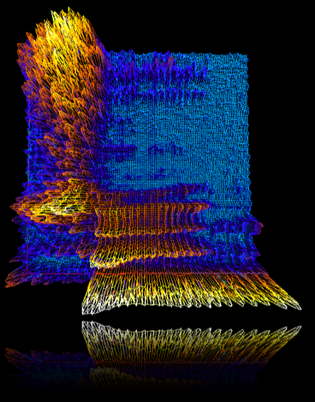
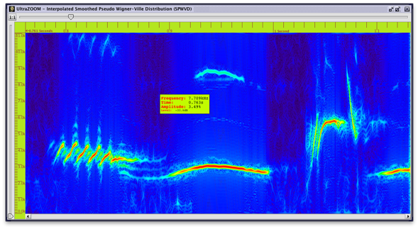
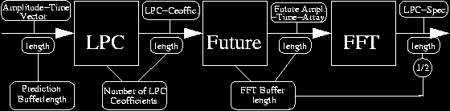
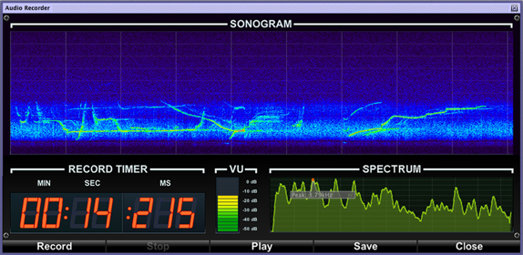

Sonogram
visible
speech
ONLINE HELP
© by Christoph Lauer Engineering - christophlauer@me.com

Content:
Sonogram has been originally programmed at the German Research Center for Artificial Intelligence (Deutsches Forschungszentrum für Künstliche Intelligenz DFKI, www.dfki.de) and is now in hands of the core developer Christoph Lauer. Sonogram is a tool to analyze speech and sound signals with methods of:
1.) Fast Fourier Transformation (FFT)
2.) Linear Predictive Coding (LPC)
3.) Wavelet Transformation
4.) Cepstral Analysis
5.) Autokorrelation
6.) Pitch Detection
7.) Speudo-Smoothed-Wigner-Ville-Distribution
Sonogram's ultimate goal is to be a little speech recognizer that works internally with hidden makrov models (HMM). But at this time, HMM's and other speech recognition tools are not implemented, only signal analysis tools are implemented. It supports drag 'n' drop features under Windows/Macintosh OSX, and can open nearly any sound file format (also video files!). It has been tested on Windows, Linux,SUN/Solaris and Macintosh OSX. Sonogram use internal JMF (the Java Media Framework). It's no problem to install it. Java3D is not necessary to run Sonogram but without it the 3D Perspectogram feature willl not be available. If you want to play the audio files with Sonogram you must install the OS native version of the Java Media Framework (JMF). For more detailed information about digital signal analysis, download the "Digital Signal Analysis with Sonogram" paper from my homepage.
Note: Sonogram is a kind of freeware and can be used for free.
2. Opening Media Files & Supported File Types:
To open a file, simply drop it over the main window, or select it with the File Chooser dialog on the toolbar or menu bar. Sonogram can open both audio and video files. Alternative media files can be opened via Internet connection and known URLs, or with a hotlist entry which can store all successfully opened Files. To open files via URL, select menu item and type the full URL into the dialog.(e.g.. http://www.dfki.de/~clauer/sonogram/demoC.wav). While opening the file, Sonogram checks the sample rate, bitrate, duration... and will convert the signal to 8-bit amplitude resolution and give a message if it can't convert the file, or if the selected file is not a known media file type. Internally, Sonogram uses the JMF to open and play these soundfiles. Sonogram includes some JMF routines to get access to the samples in the file, but if you want to play audio files with Sonogram you need to install JMF. At this time (10/2006), the internal JMF can support the following filetypes:
|
Sun Audio |
*.au |
|
Wave Audio |
*.wav |
|
Apple Audio |
*.aif, *aiff, *.aifc |
|
AVI Video |
*.avi |
|
Macromedia Flash |
*.swf, *.spl |
|
GSM Audio |
*.gsm |
|
MVR IBM HotMedia |
*.mvr |
|
MPEG I Layer I,II |
*.mpeg *.mp2 |
|
Apple Quicktime |
*.mov |
| Hot Media |
*.mvr |
For more details on supported file types, see Sun's jmf supported media formats page.
The opening of a file is split into three phases: 1. reading the samples out from the file, 2. calculating the spectrum with a specific transformation, and 3. "Painting" the spectrum on a buffered image. The first two steps can be observed with the progress bar located on the bottom edge of the main window. Left-clicking with the mouse on this progress bar will abort the process of spectral analysis taking place. Another useful feature in Sonogram is that you can open a media file as an argument in the console call. (E.g. Java Sonogram /usr/share/sounds/test.au). So it is possible to add Sonogram to your default browser or register it as a default type in Microsoft Windows for Sonos supported mediafiles.2.1. MP3 files: MP3 compressed files can be opened with Sonogram visible speech. The file will be converted to a regular wave file with the included encoder and then opened with sonogram automatically. An information dialog windows is opened if an mp3 file is opened which shows more information.
3. The Sonogram View & Playing Sounds:
If a file is dropped (this feature works only in Windows and Macintosh OSX), the program begins to read out the file, transform it and generate a sonogram image. Sonogram's software architecture uses double-buffering technology to store the image in its memory; that means pictures are only generated new for one time. Should a new file be opened, or program parameters changed, or window be resized on the screen, the image will refresh itself very quickly. Between the opening and viewing of a file, a progress dialog is displayed onscreen. On the bottom edge of the main view, a time window with a timeline is shown where you can slide a slider; this slider represents the start position for playing the sound. At the lower left side, two numbers are shown: WN for window number, and WL for window length. Note: Maximum frequency is half your window length, so frequency resolution is sample rate/WL/2. Over both of these selected values, the transformation type is shown (either FFT or LPC). If you move the mouse over the Sonogram view on the lower right side, four values will appear: P: the peak of the spectrum under the cursor, F: the actual frequency located at the cursor, T: the actual time at the cursor location, and A: relative amplitude, in percentage, at the selected point of the cursor. On the left side. the spectrum with a smoothed curve is displayed.

4. Introduction to Windowing, Sonogram Generation and Signal Analysis:
"Windowing" in signal analysis means that the signal is split into pieces, which are then singly transformed into the frequency domain. In this way, resolution over time is possible. When a signal with 8000 samples and duration from one second is transformed without windowing, each frequency in the frequency domain of this signal contains information about complete time from one second. If it is split into 100 pieces, an 80-sample time resolution would be 10ms for each frequency. But, as time resolution is goes up, frequency resolution goes down, because fewer samples are being considered for transformation. "Overlapping" means that transformation jumps not in steps from the length but in steps they are lesser than the length. The Overlap value can be changed in the General Adjustment Dialog as divide time window length, also with one increment length is time window length, with two half timew..... Windowing means also to place functions over this "piece" of signal. So jagged edges are straightened out (over the time domain) and aliasing effects are prevented. The standard transformation for calculating a sonogram is Fast-Fourier-Transformation, but in Sonogram, Linear Predictive Coding method can also be used to transform. Linear Predictive Coding (LPC) has been used in speech recognition for a long time, and calculates an LPC-spectrum in three steps: 1. It apriximates prediction coefficients (Number of Coefficients can be chosen in the General Adjustment Dialog -AD-) for a given amplitude vector (length of ampl.vec. can selected in GAD, and is named previous samples); 2. With these coefficients, LPC will calculate the future-amplitude-time-array; 3. Fourier-transform with this timeline vector gives the LPC-spectrum. For more detailed information about digital signal analysis, download the "Digital Signal Analyse with Sonogram" paper from my homepage.
5. General Adjustment Dialog (GAD):
All Options may be changed in the General Adjustment Dialog. It is shown in various register tabs; the function of each of which is described below:
Zooming in Sonogram is very simple. You simply select an area with the left mouse button and press the Zoom-in button; a new view is then generated for the selected zone. The Zoom-back button zooms back into the complete span, and the Zoom-previous button zooms back to the previous zoom view. If Save Zoom History is selected in the General Adjustment Dialog, the last zoom will be displayed on Startup, and the zoom-previous history will be restored.
With the 3D Button, every generated sonogram picture can be transformed into a three-dimensional "mountain-plot". Default, this option generates a grid-surface with the colors selected in the adjoining Dialog. In this Dialog you can select the Render Style for the 3D-plot. "Point" makes a point-cloud, "Lines" is the default grid-plot, and "Fill" draws a sleek exterior. The Axes are colored differently: Green is the frequency-axis, Blue is the timeline-axis, and the amplitude-axis goes up. To use this feature, Java3d must be installed on your machine. (See www.java.sun.com for Win,UNIX,Mac and www.blackdown.org for Linux). If Java3d is not installed on your local or network computer, Sonogram will start up normally, but the 3D feature will not be available. With the slider you can select the point-reduction factor for plotting. (This function is still under construction at the moment so it will not work correctly). With mouse surface position, the zoom and rotation is user-selectable. Logarithm frequency representation is not yet available. One very cool bonus feature is the Universe switch on the perspectogram tab in the adjustment dialog... When this option is selected, a background of 2D-plot is rendered with a planetary nebular picture! The Universe is completely rotatible, movable and zoomable with rendered surface too. You can also use the keyboard (arrow keys and page up/down) to navigate thought the Perspectogram.

8. Ultrazoom with the Wigner-Ville-Distribution:
The Smoothed-Pseudo-Wigner-Ville-Distribution (Ps. WVD) allows very deep zooms into the Time and Frequency domain with a so far unknown accuracy. Unlike the classical FFT we can overcome the uncertainty principle. You can select the Dimension of the rendered SPWVD-Spectogram in this Settings-Dialog. Starting point for the transformation is the start point of the selection in the Sonogram. The length of the Spectogram can be selected with the (X-Size) Windowlengt in Samples slider, and the Frequency image resolution can be selected with (Y-Size) Frequency Resolution slider. One Pixel lengt in X-Direction of the rendered Image equals exactely one raw Sample in the Time-Domain, so the length of the generated SPWVD corresponds directely to the number of raw samples. Note that very large Spectograms are memory intensive, so the render algorithm can run into memory problems for big Spectograms. The 3D-Perspectogram Feature is only available for relatively small spektrum sizes and the 3D Button will be automatically enabled/disabled. Every time a new SPWVD-Spectrum is rendered the old one will be deleted. Despite the massive parallelization of the core Algorithm, the render process is very computationally intensive and could take time. Use the Right-Mouse-Button for direct rendering without showing the Settings-Dialog. 
9. Cepstrum and Fourier Dialogs:
These features only have a small requirement to run: they run only if the signal is long enough (say, longer than ~0.2 sec.). Please don't forget: to generate these views the program requires a time area, so the mouse point is the starting point for calculating, and plots are built from this starting point on, with the span of window length indicated in the information dialog. You can see that if you go to the end of the Signal. In Fourier View, Sonogram tries to calculate the ten local maximums of the spectrum and shows their frequencies in amplitude order. In the General Adjustment Dialog are two sliders for changing the options for this calculation dialog: 1. Frequency ratio for better viewing under the frequency scale, and 2. Transformation-Window-Buffer-Size which changes the number of FFT points and reduces CPU load. NOTE: For windowed transformation, Heisenbergs's concept of "Unschärferelation" from the quantum mechanics is at work, so as your buffer length increases, the frequency resolution goes up-- and the time spent over that transformation goes up!!! That means that with a greater time buffer length, your time resolution goes down!!! Time Buffer Length is shown in the information dialog. Cepstrum View is calculated with the standard formula for Cepstrum =(InvFFT(log(FFT(timeline array)))) and shows the wavelength for outstanding frequency (Quefrenz). It is useful in speech recognition.
10. Linear Predictive Coding Dialog:
Here, as before, an area of samples is used to generate the LPC-View. Time Window Length refers to the previous samples. Formant Finder searches for the relative maximums in the curve and displays them. In GAD, the frequency ratio and transformation points can be selected.

This nifty feature will easily search within each time-stamp for its peak point and highlight them. Custom colors for these points and maximum search frequencies can be selected, and a tracing of these points with a smoothed frequency vector is available.
12. Logarithm Amplitude and Frequency:
Logarithm amplitude is set to "enabled" as default. Amplitude of frequency range and logarithm is controlled with the slider position. You'll want to experiment with each feature here to find out how it works. With a logarithm frequency, the frequency axis can be stretched within the scale. The base for your logarithm is selectable with a slider in GAD. Enabling the Grid view is recommended in order to better discern the separations of your frequencies.
13. Import and Export to Scalable Vector Graphics:
SVG (http://www.w3.org/TR/SVG/) is currently a W3C proposed recommendation; SVG is an XML language that can be used to specify drawings, including the attachment of animation effects and event-handlers on objects within the display. SVG graphical objects include text areas and standard drawing objects, such as lines and polygons. The most important factor in the development of SVG is to allow faster web downloads for graphics: SVG files are typically much smaller than the bitmaps they replace. Sonogram's SVG export feature uses only simple SVG features, such as drawing rectangles for each spectrum point, and lines for the grid. Zoom and colors are adjustable in the export dialog. SVG stored spectrums can be re-imported into Sonogram to display them. But without re-opening the original file, not all functions of the program will be available. During re-import, the program will ask you what to do, and if the original file is available. Also export to raw SVG is possible, so Sonogram-specific tags will not be included in the SVG file. With no Sonogram specific tags, re-import into Sonogram is not available; the program will check this and warn you if you try it. With the Graphic Size slider, the multiplication factor for graphic size can be regulated.
Export To a bitmap file is achieved by looking under File Menu---> Save Sonogram Picture to BMP File. The file format is the Windows 3.1 bitmap, which not all common graphic programs can open. (Programs such as Gimp, Electric Eye, and MS Paint can open this format, though).
Depending on your operating system, a printing dialog is shown, from which you can configure various parameters.
This dialog shows all internal parameters of a sonogram. Especially useful for ascertaining values for time window lengths and resolutions.
The audio recorder can be used to record audio samples from your computer. Note to select the correct mixer settings in your OS.

| Note\Octave |
0 |
1 |
2 |
3 |
4 |
5 |
5 |
7 |
| A |
27.5Hz |
55.0Hz |
110.0Hz |
220.0Hz |
440.0Hz |
880.0Hz |
1760Hz |
3520Hz |
| A# |
29.1Hz |
58.3Hz |
116.6Hz |
233.1Hz |
466.2Hz |
932.2Hz |
1864.7Hz |
3729.3Hz |
| B |
30.9Hz |
61.7Hz |
123.5Hz |
246.9Hz |
493.9Hz |
987.8Hz |
1975.6Hz |
3951.1Hz |
| C |
32.7Hz |
65.4Hz |
130.8Hz |
261.6Hz |
523.3Hz |
1046.5Hz |
2093.0Hz |
4186.0Hz |
| D# |
34.7Hz |
69.3Hz |
138.6Hz |
277.2Hz |
554.4Hz |
1108.7Hz |
2217.5Hz |
4434.9Hz |
| D |
36.7Hz |
73.4Hz |
146.8Hz |
293.6Hz |
587.32Hz |
1174.7Hz |
2349.3Hz |
4698.6Hz |
| E# |
38.9Hz |
77.8Hz |
155.6Hz |
311.1Hz |
622.3Hz |
1244.5Hz |
2489.0Hz |
4978.0Hz |
| E |
41.2Hz |
82.4Hz |
164.8Hz |
329.6Hz |
659.3Hz |
1318.5Hz |
2637.0Hz |
5274.0Hz |
| F |
43.7Hz |
87.3Hz |
174.6Hz |
349.2Hz |
698.5Hz |
1396.9Hz |
2793.8Hz |
5587.7Hz |
| G# |
46.2Hz |
92.5Hz |
184.9Hz |
369.9Hz |
739.9Hz |
1479.9Hz |
2959.9Hz |
5919.9Hz |
| G |
48.9Hz |
97.9Hz |
195.9Hz |
391.9Hz |
783.9Hz |
1567.9Hz |
3135.9Hz |
6271.9Hz |
| A# |
51.9Hz |
103.8Hz |
207.6Hz |
415.3Hz |
830.6Hz |
1661.2Hz |
3322Hz |
6644.8Hz |
| demo1.wav | (Clay-colored-Robin Gilbdrossel) Bird Tweet 1 |
| demo2.wav | Song from Aphex Twin - Windowlicker |
| demo3.wav | exponential Sweep |
| demo4.wav | (unknown) Bird Tweet 2 |
| demo5.wav | "Hier Spricht Helmut Kohl..." |
| demo6.wav | (unknown) Bird Tweet 3 |
| demo7.wav | "Blüm..." |
| demo8.wav | A spoken gerring message to me |
| demo9.wav | Techno Music |
| demo10.wav | A Whistle |
| demo11.wav | Artifical speech sythesis |
August 2021 by Christoph Lauer , and very thanks to David Lincoln Brooks
christophlauer@me.com
- https://github.com/Christoph-Lauer/Sonogram - SEARCH